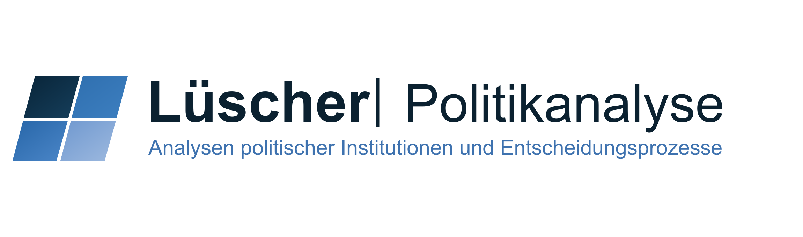

Analyse und Beratung für Politik und Verwaltung
Lüscher Politikanalyse bietet empirisch fundierte Analyse und Beratung für Parteien, öffentliche Verwaltungen und politische Organisationen.
Im Zentrum stehen politische und institutionelle Fragestellungen, die eine präzise Einordnung, belastbare Datengrundlagen oder strategische Orientierung erfordern. Die Mandate reichen von Gutachten und Kurzgutachten über Datenanalysen und Simulationen bis zu Wahl-, Abstimmungs- und Strategieberatung.
Mein Name ist Sandro Lüscher. Ich bin Politologe, wohne in Aarau und habe 2024 an der Universität Zürich zu kantonalen Wahlsystemreformen in der Schweiz promoviert. In meiner Dissertation untersuchte ich deren Entstehung, Ausgestaltung und politische Auswirkungen anhand vergleichender Fallstudien und quantitativer Wirkungsanalysen.
Derzeit arbeite ich als Postdoc am Zentrum für Demokratie der Universität Zürich. Meine Forschung befasst sich unter anderem mit institutionellen Reformen, Vernehmlassungs- und Konsultationsprozessen, politischen Entscheidungsprozessen und alternativen Entscheidungslogiken in politischen Systemen.
Ich biete wissenschaftlich fundierte Analysen und Beratungsleistungen für Parteien, öffentliche Verwaltungen und politische Organisationen an. Die Mandate werden je nach Fragestellung als Kurzgutachten, Gutachten, Datenanalyse, Simulation, Präsentation oder strategische Beratung umgesetzt.
Kurzgutachten, Gutachten und empirische Analysen zu politischen, institutionellen und strategischen Fragestellungen.
Simulationen von Sitzverteilungen, Wahlsystemeffekten, Proportionalität, Repräsentation und institutionellen Reformfolgen.
Datenbasierte Auswertungen von Wahl- und Abstimmungsergebnissen, regionalen Mustern, politischen Kräfteverhältnissen und Entwicklungstendenzen.
Beratung zu politischen Ausgangslagen, Positionierung, Reformoptionen, Kampagnenlogiken und parteistrategischen Handlungsoptionen.
Fragestellung, Datenlage, Umfang und Zeithorizont kläre ich gerne in einem ersten unverbindlichen Austausch. Auf dieser Grundlage erstelle ich bei Bedarf eine Offerte für ein konkretes Mandat.
Für Anfragen zu Analysen, Gutachten, Simulationen, Präsentationen oder strategischen Beratungsmandaten erreichen Sie mich per E-Mail.